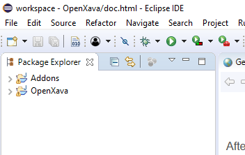
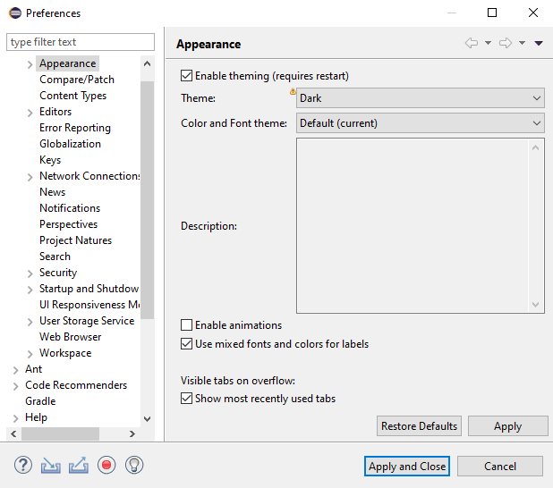
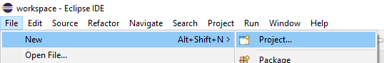
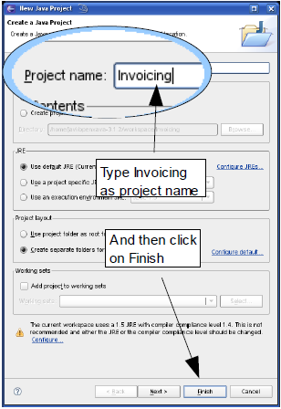

Since v6.4 OpenXava includes
OpenXava Studio, so you don't need an additional IDE to work with
OpenXava. OpenXava Studio is based on Eclipse but is lighter and more
beautiful. Moreover, you can install any Eclipse plugin you need on top of
OpenXava Studio and change or customize the visual theme, to have a light
theme or color icons, for example. Anyways, if you prefer to work with
your own Eclipse you can. Moreover, OpenXava projects are WTP projects, so
if you use Eclipse IDE for Enterprise Java Developers, you can add a
Tomcat server in the
Servers tab and add your OpenXava
applications to it
.
Install Lombok
OpenXava does not require Lombok, however since v6.5 we use it in the
Getting Started guide and the OpenXava course, so we recommend you install
it.
Follow the official
doc to install Lombok into your Eclipse.
Use OpenXava workspace
After starting your Eclipse it will ask you to select the workspace,
select the
workspace folder included in your OpenXava
distribution:

Probably
Eclipse will complain about the Eclipse workspace version (newer or
older) with a dialog like this:

Don't
worry, just click on Continue.
If
you have done it right, you will see the Addons and OpenXava
projects on the left, inside the Package Explorer, in this way:

If
not, you're not in the OpenXava workspace, use File
> Switch Workspace to
look for the OpenXava workspace again.
In
order that OpenXava workspace works nicely you have to select Dark
theme. In the top menu select Window > Preferences > General
> Appearance:

Choose
Dark for Theme and click on Apply and Close
button.
Create a new Java project
You have to create a new regular Java project, for that choose
File
> New > Project in the menu:

Then select
Java Project and click on
Next:

Now type the project name,
Invoicing
for example, and click the
Finish button:

If you're using Java 9 or better with a recent version of Eclipse, it will
ask you:

Just click on Don't Create.
After this step you have an empty Java project named
Invoicing:
Turn the project into an OpenXava project
Now you must convert your plain Java project into an OpenXava project.
Inside
OpenXava project you have a
CreateNewProject.xml
file, execute it as an Ant build, in this way:

Now refresh your project with F5 and you're ready to follow the getting
started guide: